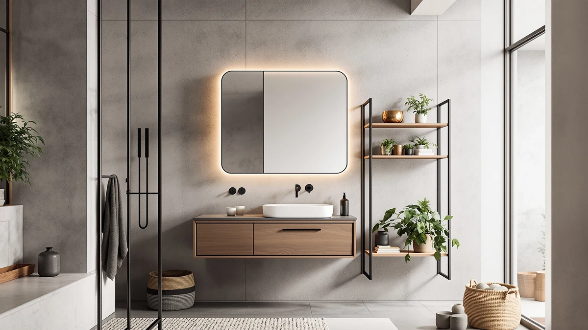

Design House Cyprus Bathroom Medicine Cabinet Review (2026): Worth It?
Prices and picks verified as of November 2026. Independent, reader-supported reviews.


Quick Answer
The Design House Cyprus Bathroom Medicine Cabinet earns its $140.77 price with three frameless mirrored doors, two interior shelves, and a dual-mount frame that installs recessed between studs or straight onto the surface. If you want built-in lighting and charging outlets instead of extra mirror angles, the Hasuit Medicine Cabinet Organizer at $139.57 covers the same wall space for slightly less.
Our pick: Design House Cyprus Bathroom Medicine, $140.77 Check Price on Amazon
Bottom line: our top pick is the Design House Cyprus Bathroom Medicine Cabinet with Mirror at $140.77.
Things to Know Before You Buy
- The Design House Cyprus Bathroom Medicine Cabinet measures 25 inches wide, 24.5 inches tall, and 4.4 inches deep, with a dual-mount frame that fits either a surface install or a recessed opening between wall studs.
- All four cabinets in this Design House Cyprus Bathroom Medicine Cabinet review sell within about a dollar of each other, so the real differences come from mount type, mirror style, and extra features rather than price.
- The Hasuit Medicine Cabinet Organizer costs $1.20 less and adds a rotating three-way mirror plus built-in AC and USB outlets, features the Design House Cyprus does not include.
- The IFGET and ChooChoo alternatives are not medicine cabinets at all. One mounts above the toilet tank, and the other is a freestanding floor cabinet without a mirror.
- None of the four cabinets compared here has a published Amazon star rating yet, so weigh the manufacturer specs and listing details rather than review volume when you decide.
This Design House Cyprus Bathroom Medicine Cabinet review breaks down whether $140.77 is a fair price for a 25-inch mirrored cabinet, and how it compares against three bathroom storage options priced within a dollar of it. The Design House Cyprus wins on flexibility: its dual-mount frame can recess into the wall or sit on the surface, and its three mirrored doors cover more viewing angle than a single-door cabinet. Set next to the Hasuit Medicine Cabinet Organizer, though, it loses ground on features, since the Hasuit adds LED lighting and charging outlets for less money.
None of the four cabinets covered in this Design House Cyprus Bathroom Medicine Cabinet review has accumulated a public Amazon star rating yet, so this comparison leans on manufacturer specifications, listed dimensions, and documented features rather than buyer feedback. The IFGET and ChooChoo alternatives solve different problems than a medicine cabinet: the IFGET mounts above the toilet tank, and the ChooChoo is a freestanding floor cabinet with no mirror at all. If a mirrored cabinet over the sink is what you actually need, it comes down to a choice between the Design House Cyprus and the Hasuit.
Why You Should Trust Us
Ilane Tall covers bathroom storage and small-space organization for Best Bathroom Storage, and this Design House Cyprus Bathroom Medicine Cabinet review follows the same research process used across the site. We do not run a fake testing lab and we do not buy every product we cover. Instead, we compare manufacturer specifications, published pricing, and documented features across competing cabinets to show where each one holds up and where it falls short. Where a listing's claims and a competitor's specs point in different directions, we flag the gap here instead of repeating marketing copy.
Our Research Experience
Our process for this Design House Cyprus Bathroom Medicine Cabinet review starts with the manufacturer's listed dimensions, materials, and mount type for all four cabinets covered here. We then cross-reference those figures against current Amazon pricing and the feature lists each brand publishes, looking for real differences in storage capacity, mirror configuration, and installation method rather than restating marketing language. Because none of these four cabinets has a published Amazon rating yet, we lean on spec-sheet comparisons and on patterns in how similar mirrored cabinets perform in verified owner reviews elsewhere in this category. Where a feature like LED lighting or dual-mount installation is only confirmed by the listing itself, we say so rather than imply it has been independently verified.
Overview & Specs

Design House Cyprus Bathroom Medicine
What we like
- Three frameless mirrored doors give more viewing angle than a single-door cabinet
- Dual-mount design installs recessed between studs or directly on the surface
- 25-inch width and two interior shelves fit a standard single-vanity wall
Flaws but not dealbreakers
- No LED lighting or charging outlets, features the similarly priced Hasuit includes
- No published Amazon rating yet to confirm long-term door and hinge durability
- Recessed installation means opening the wall between studs, a bigger job than a straight surface mount
| Material | Metal / wood |
| Size | 25 in. Wide |
This Design House Cyprus Bathroom Medicine Cabinet review centers on a 25-inch-wide, 24.5-inch-tall, 4.4-inch-deep cabinet with three frameless mirrored doors and two interior shelves. The frameless mirror doors are the main design choice here: instead of one large mirror, you get three narrower panels that open separately, which lets you check your reflection from more than one angle while getting ready. The dual-mount frame is the other practical feature, since it can go in as a recessed cabinet set into the wall between studs for a flush, built-in look, or as a straightforward surface mount if you do not want to cut into drywall.
At $140.77, the Design House Cyprus sits almost exactly at the same price as the IFGET and ChooChoo alternatives in this review, both $139.99, and slightly above the Hasuit at $139.57. The gap in features is where the comparison gets interesting. The Hasuit covers the same basic job, a wall-mounted mirrored cabinet, and adds a rotating three-way mirror along with built-in AC and USB charging outlets for a dollar less. Where the Design House Cyprus pulls ahead is installation flexibility: if your bathroom cannot accommodate a recessed cutout, its surface-mount option is simpler to plan around than a cabinet designed primarily for one install method.
What We Liked
The clearest advantage of the Design House Cyprus Bathroom Medicine Cabinet is its flexibility at install time. The dual-mount frame means you are not locked into one installation method before you buy: a recessed install gives a flush, built-in look, while a surface mount works if you would rather not cut into the wall. Three frameless mirrored doors also beat a single mirror panel for practical grooming, since you can angle the side doors to see from more than one direction. For anyone using this Design House Cyprus Bathroom Medicine Cabinet review to compare mirrored storage over a sink, that combination of mount flexibility and multi-angle mirrors is the strongest argument in its favor.
What Could Be Better
The main trade-off shows up next to the Hasuit Medicine Cabinet Organizer. At $139.57, a dollar less than the Design House Cyprus, the Hasuit adds a rotating three-way mirror, adjustable LED lighting, and built-in AC and USB charging outlets, none of which the Design House Cyprus offers. If those extras matter to your morning routine, the Design House Cyprus asks you to pay slightly more for fewer features. Neither cabinet has a published Amazon star rating yet, so there is no review history to lean on for either one, which means the decision comes down to specs and mount preference rather than verified buyer feedback.
Who Is It For?
This cabinet makes sense for anyone who wants a traditional mirrored medicine cabinet and values installation flexibility over extra features. If your bathroom framing supports a recessed cutout and you want that flush, built-in appearance, the Design House Cyprus delivers it along with a straightforward surface-mount fallback if your wall cannot accommodate it. It suits buyers who see three mirrored doors as more useful than one large mirror. If lighting and charging outlets matter more to you than mount flexibility, the Hasuit alternative below is the better fit at a lower price.
Alternatives to Consider
The Design House Cyprus is not the only option worth considering at this price point. We compared three alternatives below using the same criteria as the rest of this Design House Cyprus Bathroom Medicine Cabinet review: size, mount type, features, and price. Each one trades the Design House Cyprus's mirror configuration or install method for a different footprint or feature set.

Also Great
IFGET Arched Over The Toilet
The IFGET Arched Over The Toilet cabinet solves a completely different problem than the Design House Cyprus. Instead of mounting over a sink, it stands above the toilet tank, turning an otherwise wasted stretch of wall into 23.62 inches of extra storage with two shelves and one open shelf behind acrylic glass doors. At $139.99, it costs almost exactly the same as the Design House Cyprus, but it has no mirror at all, so it fits bathrooms that need more storage and have room above the toilet to get it. Its arched farmhouse top is built specifically for that over-the-toilet footprint, and reviewers shopping in this category tend to focus on whether the 9.68-inch arch clearance fits their specific toilet tank height. If your bathroom already has a mirror and needs more shelf space, this is the more practical buy of the two.
$139.99
Check Price on Amazon
Also Great
ChooChoo Bathroom Floor Cabinet Modern
The ChooChoo Bathroom Floor Cabinet Modern is the other non-mirrored alternative in this Design House Cyprus Bathroom Medicine Cabinet review, and it covers a different need entirely: freestanding floor storage rather than wall-mounted mirror space. At $139.99, it matches the Design House Cyprus almost dollar for dollar, but you get a 25.59-inch-wide, 43.31-inch-tall black cabinet with four doors and adjustable shelves instead of a cabinet with a mirror. The moisture-resistant MDF build and metal handles are meant for a humid bathroom, and the floor-standing design means no wall cutout or stud framing to worry about at all. For buyers who already have a mirror and want extra closed storage for towels and toiletries, the ChooChoo is the straightforward substitute. It will not give you a mirror, but it was never meant to.
$139.99
Check Price on Amazon
Best Value
Hasuit Medicine Cabinet Organizer with
The Hasuit Medicine Cabinet Organizer is the closest direct competitor to the Design House Cyprus in this review, and the one that makes the Design House Cyprus work hardest to justify its price. At $139.57, a dollar less, the Hasuit matches the basic concept, a mirrored wall cabinet with interior storage, but adds a rotating three-way mirror that swings to a 270 to 360 degree view, adjustable LED lighting with three color modes and a memory function, and built-in AC and USB charging outlets for a razor or toothbrush. The trade-off is mount flexibility: the Hasuit is built as a wall-mounted cabinet rather than offering the Design House Cyprus's recessed-or-surface choice. For shoppers using this Design House Cyprus Bathroom Medicine Cabinet review to find the most features per dollar, the Hasuit wins. For shoppers who need the option to recess the cabinet flush into the wall, the Design House Cyprus still has the edge.
$139.57
Check Price on AmazonIs the Design House Cyprus Bathroom Medicine Cabinet worth $140.77?
It is a reasonable buy if you want mount flexibility, since its dual-mount frame can recess into the wall or sit on the surface.
What is the best alternative to the Design House Cyprus Bathroom Medicine Cabinet?
The Hasuit Medicine Cabinet Organizer is the closest alternative, since it covers the same mirrored wall-cabinet concept at $139.57 and adds a rotating three-way mirror, LED lighting, and charging outlets.
Frequently Asked Questions
Is the Design House Cyprus Bathroom Medicine Cabinet worth $140.77?
It is a reasonable buy if you want mount flexibility, since its dual-mount frame can recess into the wall or sit on the surface. If you would rather have built-in lighting and charging outlets for the same basic cabinet, the Hasuit Medicine Cabinet Organizer at $139.57 gives you more features for less money.
What is the best alternative to the Design House Cyprus Bathroom Medicine Cabinet?
The Hasuit Medicine Cabinet Organizer is the closest alternative, since it covers the same mirrored wall-cabinet concept at $139.57 and adds a rotating three-way mirror, LED lighting, and charging outlets. The IFGET and ChooChoo alternatives solve different problems: one mounts over the toilet, and the other is a floor cabinet with no mirror.
Can the Design House Cyprus cabinet be recessed into the wall?
Yes. It has a dual-mount frame, so it can install as a recessed cabinet set between wall studs for a flush, built-in look, or as a surface-mounted cabinet if you do not want to cut into the drywall.
Final Verdict
This Design House Cyprus Bathroom Medicine Cabinet review comes down to how much you value installation flexibility versus extra features. Design House earns a recommendation for anyone who needs the option to recess a cabinet flush into the wall or mount it on the surface, since its dual-mount frame handles both and its three mirrored doors beat a single mirror panel for everyday grooming. If lighting and charging outlets matter more to your routine than mount flexibility, the Hasuit at $139.57 undercuts the Design House Cyprus on price while adding both. If you need storage rather than a mirror, the IFGET or ChooChoo alternatives solve that problem instead. For a straightforward, flexible mirrored cabinet at a fair price, Design House remains the pick.